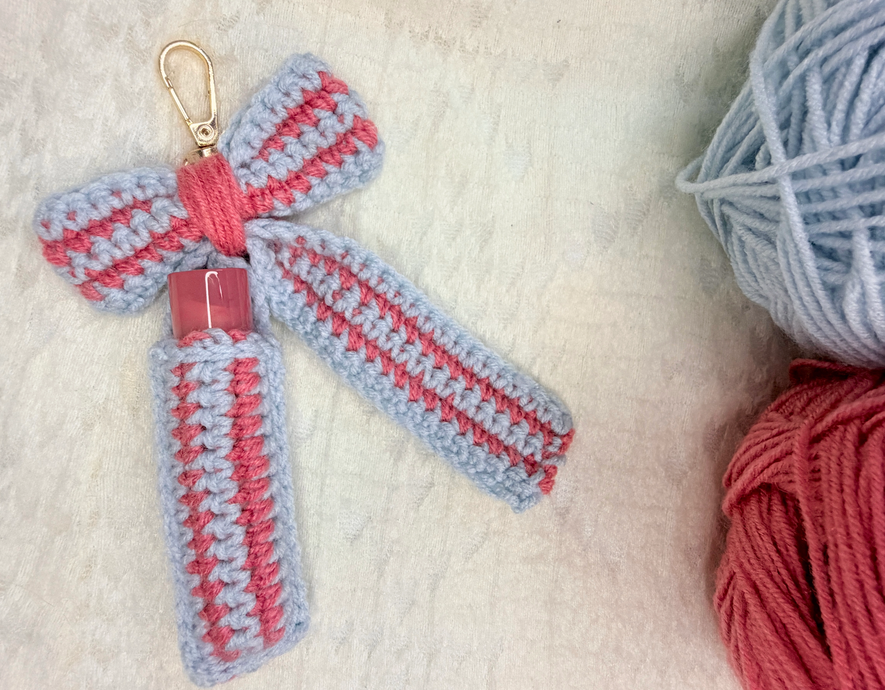
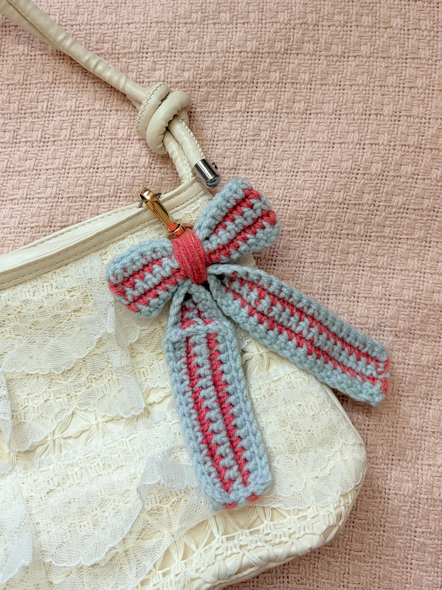

Free Crochet Pattern
Crochet Bow Lip Balm Holder Bag Charm | Free Written Pattern + Video Tutorial
Looking for a cute little crochet project you can finish in an afternoon? This Crochet Bow Lip Balm Holder Bag Charm combines a striped bow with a handy pouch for your lip balm. It’s small, practical, and fun to hang on your handbag, backpack, or keys.

About the Pattern
This project combines a simple lip balm pouch with a striped bow decoration. The pouch holds your lip balm, while the bow and hanging hardware turn it into a cute little bag charm.
The pattern uses basic single crochet stitches worked in rows, making it suitable for beginners who are comfortable with chains and single crochet. You’ll make three pieces—the pouch, long bow tail, and bow body—then assemble them to create the charm.
Use your favourite two yarn colours, experiment with combinations, or adjust the pouch to suit your lip balm. Changing the yarn weight, hook size, or stitch count may affect the fit. It also makes a sweet handmade gift for someone who loves crochet and cute accessories.
Video Tutorial
Prefer watching someone crochet along with you? Follow the full video tutorial on my YouTube channel, Stitchy Days. It’s especially helpful for the striped pieces, joining the pouch to the bow tail, and shaping the bow by pinching and wrapping its centre. If this is your first pouch or bow, watch the assembly section before sewing the pieces together so you can see how they fit.
Materials
- Weight 3 acrylic yarn – 2 colors
- 3.5 mm crochet hook
- Stitch markers
- Yarn needle
- Lobster clasp or key ring
- Scissors
Want to shop the materials?
Check out the materials here →Abbreviations
Written Pattern
How to Crochet the Bow Lip Balm Holder
You’ll crochet three pieces separately: the pouch, the long bow tail, and the bow body. Join them during assembly, then add a lobster clasp or key ring.
1. Crochet the Lip Balm Pouch
Begin the pouch in Colour A. This piece holds your lip balm, so check its size before finishing the assembly.
Pouch Pattern
Foundation: Ch 16.
R1 — Colour A: Sc across.
R2 — Colour B: Sc across.
R3 — Colour A: Sc across.
R4 — Colour B: Sc across.
R5 — Colour A: Sc across.
Change to the next colour at the end of each row and carry the unused yarn.
Tips for the Pouch
- Keep your stitches consistent for a neat shape.
- Change colours at the same edge each time to keep the stripes aligned.
- Don’t pull the carried yarn too tightly, or the fabric may curl or bunch.
- Check that the pouch will fit your lip balm before joining it to the other pieces.
Set the pouch aside while you make the bow pieces. Follow the video to see how the flat pouch piece is folded and joined.
2. Crochet the Bow Tail
The long striped bow tail sits behind the main bow and gives the finished charm its layered look. Begin in Colour A.
Bow Tail Pattern
Foundation: Ch 41.
R1–R5: Sc across, alternating colours each row.
Fasten off according to your assembly method, leaving a yarn tail if you plan to sew the piece to the bow.
Tips for the Bow Tail
- Keep colour changes consistent for even stripes.
- Check that the piece lies flat before assembling.
- Make sure the carried yarn isn’t too tight, especially along the edges.
- Leave a yarn tail for sewing if needed.
Set the bow tail aside.
3. Crochet the Bow Body
This shorter striped piece forms the bow loops. Begin in Colour A.
Bow Body Pattern
Foundation: Ch 21.
R1–R5: Sc across, alternating colours each row.
Fasten off, leaving a yarn tail for sewing.
Tips for the Bow Body
- Keep your tension similar to the bow tail so both pieces look consistent.
- Align the stripes neatly.
- Before sewing the ends together, check that the piece lies flat and isn’t twisted.
Now all three crocheted pieces are ready for assembly.
4. Final Assembly
Take your time with assembly. A little adjustment before sewing can make a big difference to the finished shape.
Step 1: Attach the Pouch to the Bow Tail
Place the pouch against the bow tail and align the pieces as shown in the video. Use stitch markers to mark 16 stitches, then join the pouch to the tail with slip stitches. Work slip stitches around the pouch’s loose edge as shown in the original construction. Check the fit before finishing the join.
Tip: Make sure the opening is large enough for your lip balm to slide in and out comfortably.
Step 2: Shape the Bow Body
Bring the two ends of the shorter bow body together and sew them to form a loop. Check that the fabric isn’t twisted before joining the ends.
Step 3: Create the Bow Shape
Pinch the centre of the loop together. Wrap yarn around the middle several times to hold the shape, then secure the yarn at the back.
Tip: Adjust both sides before securing the centre. Aim for balanced loops, but don’t worry if they aren’t perfectly identical.
Step 4: Attach the Bow Tail
Place the bow tail behind the shaped bow body, centre it, and sew the pieces together securely. Check that the centre wrap hides the joining point and that the stripes look the way you want.
Step 5: Attach the Lobster Clasp or Key Ring
Attach your chosen hardware to the top of the bow charm and secure it firmly so it can hang from your handbag, backpack, or keys.
Tip: Gently check that the hardware is secure and that no stitches around the attachment point are loose.
Step 6: Finishing Touches
- Check that the pouch is securely joined.
- Make sure the bow body holds its shape.
- Adjust the bow tail so it sits neatly behind the bow.
- Weave in all loose yarn ends.
- Insert your lip balm to check the fit.
- Make sure the clasp or key ring is firmly attached.
And that’s it! Your Crochet Bow Lip Balm Holder Bag Charm is ready.
Your Bow Lip Balm Holder Is Ready!
Attach your little holder to a handbag or backpack so your lip balm is easy to find. Try pastel shades, bold colour combinations, or colours that match your everyday bag. You can also make one for a friend or create a matching set.
I hope you enjoyed making this project! If you try the pattern, I’d love to see how yours turns out. Feel free to tag Stitchy Days when you share your finished creation.
A Little Note from Stitchy Days ♡
Hi there!
Thank you so much for trying one of my crochet patterns! I’m so happy to have you here, and I hope you enjoy making this project as much as I enjoyed creating it.
If you make something using this pattern, I’d love to see it! Feel free to tag Stitchy Days when you share your finished project. Seeing your creations means so much to me as I continue growing this little crochet corner.
Thank you for supporting my work and happy crocheting! ♡
